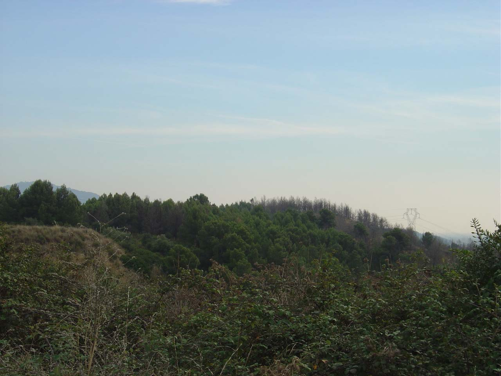
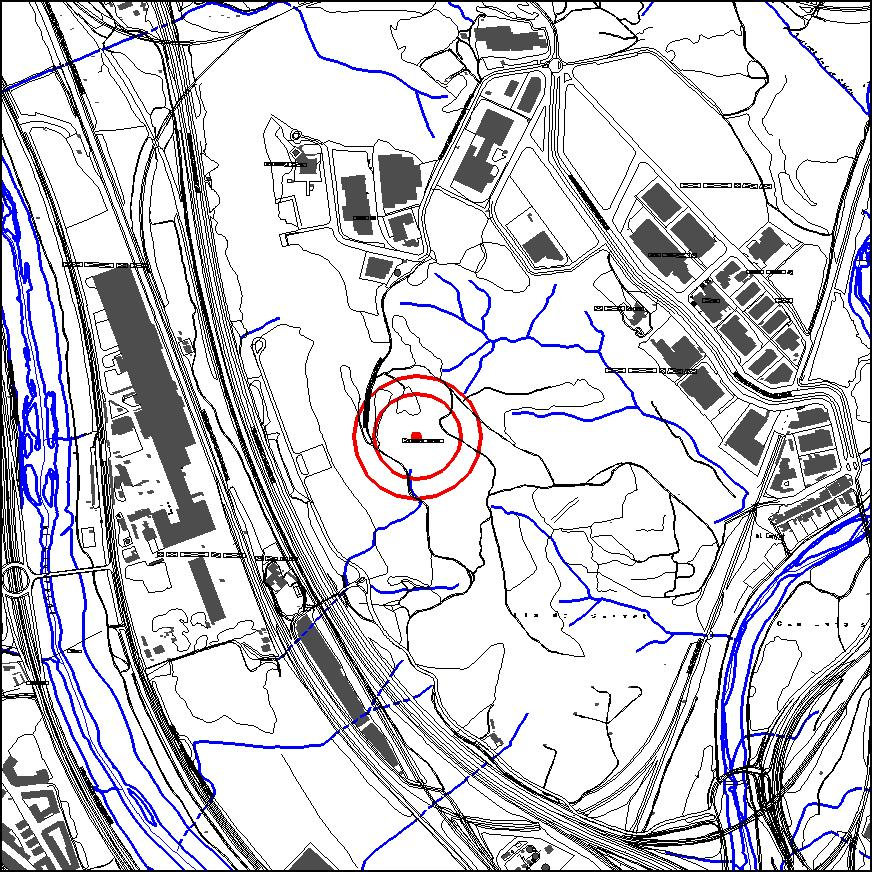

|  |  |
Nom de l’element: Turó del Telègraf
Clau d’identificació: D.13
Nucli o indret: Entre el P.I. Agripina i el P.I. Can Cases del Riu.
UTM: X= 415.762, Y= 4.590.262, 116,30 m snm.
Règim del sòl: sòl no urbanitzable.
Característiques:
Turó que acull una comunitat forestal de bosc adult de pi i matollar, en una densitat elevada. La seva altitud màxima és de 116,30 m snm. S’hi varen trobar pedres prehistòriques de riu tallades a mà, denominades clopers.
1.2. Estat de conservació:
Molt bo, tot i que s’observen alguns arbres cremats a la banda sud-est.
1.3. Ús actual:
Natural i patrimoni arqueològic.
1.4. Accés:
Accés fàcil des del P.I. Santa Rita.
Font potencial de restes arqueològiques prehistòriques.
3.1. Usos admesos:
Espais lliures.
3.2. Condicions d’ordenació:
Segons Pla Especial a redactar.
3.3. Accés
Des del P.I. Santa Rita.
BPU (Bé Protegit Urbanísticament)